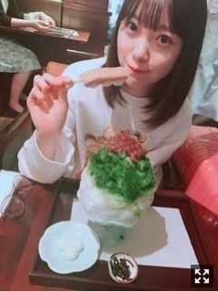

2018/0606Wed桃狩りしたいなあ
ケラケラさんの
スターラブレイションを聴いています♪
この曲、好きやな〜
ラストシンデレラは、
定期的に見たくなるドラマの1つ！
ウォーターボーイズ
失恋ショコラティエ
逃げる恥だが役に立つ
プロポーズ大作戦
花より男子
リッチマンプアウーマン
も定期的に見たくなります。
あと何が好きだったかなー
思い出し中。。
皆さんはどんなドラマが好きでしたか？？
聞きたいです(^-^)
好き。といえばかわいい女の子も好き！
私も頑張らなきゃ〜いやされる〜って言いながら
色んな方の画像をメンバーと見ながら
話しています。笑
アイドルには言わずともかわいい人は
たくさんいるから省略させていただき、
新垣結衣さん 桐谷美玲さん 佐々木希さん 小松菜奈さん
今田美桜さん 志田友美さん 小嶋陽菜さん 野崎萌香さん
広瀬すずさん 吉岡里帆さん ohmygirlさん twiceさん
かわいい(^o^)♡♡
ため息がでるくらい女神な方々です。
かわいいって罪だ〜〜

そういえば！
この間ね、SKE48の
松井珠理奈さんとかき氷食べてきました！
同い年 同じ東海地方
肉好き 最初にセンターをさせていただいた
っていう幾つかの共通点があり
大先輩だけど、本当に話しやすいの☺︎
お互いグループは違うけど
目指してるものやグループに
対する考え方など色々話すことができて
珠理奈さんと話してると
たくさん笑えて楽しいし、
もっともっと私も頑張らなくちゃって
思えます。
グループ関係なく
誘ってくれたり
仲良くしてくれて、嬉しいな...
人との出会いを大切に。
私も、濃い人間にならなくちゃ。


tops lilly brown
pants snidel
お気に入りのコーディネート♡
今日は23:45〜レコメン！
聴いてね〜 よろしくね〜
久しぶりの、のりみおな！

桃狩りしたいなー
フルーツの中で1番すき。
リップもタブレットも桃味！
ばーい。
2018/06/06 12:36
コメント(473)
みおなすき！
桃狩りもすき！
花のち晴れもすき！
早く明日になれーー
桃狩りもすき！
花のち晴れもすき！
早く明日になれーー
ガッキーのパパとムスメの7日間とドラゴン桜めっちゃ面白いですよ！
オレンジデイズめっちゃ観てたよ！
どの画像も可愛すぎて好きだなー
どの画像も可愛すぎて好きだなー
私も花男すき!!最高のドラマ!つくしちゃんのように強い女の子になりたいなと思います｡
花晴れも面白くて毎週楽しみ!愛莉ちゃんが可愛すぎる...!
花晴れも面白くて毎週楽しみ!愛莉ちゃんが可愛すぎる...!
桃狩りいいな
最近のドラマなら、アンナチュラルが好きだった
今期は正義のセ
今までなら、草なぎ剛くんが出てたドラマは全部見てる
ダメ恋や逃げ恥も好き
最近のドラマなら、アンナチュラルが好きだった
今期は正義のセ
今までなら、草なぎ剛くんが出てたドラマは全部見てる
ダメ恋や逃げ恥も好き
他にはオレンジデイズやコードブルーやホタルノヒカリも好き
スポーツの、ドラマなら初森ベマーズ
スポーツの、ドラマなら初森ベマーズ
恋仲が好きー！
めっちゃわかる！花より男子以外は一緒や！笑
全部録画しててHDDに入っとります。
全部録画しててHDDに入っとります。
たまに見たくなるドラマベスト3！！！
第3位 イケメンパラダイス
第2位 ブザービート
第1位 流星の絆
いかがでしょうか？
何となく年齢がバレる気がする……。
子どもの頃に見ていたドラマやアニメで年齢が推測できるよね笑
第3位 イケメンパラダイス
第2位 ブザービート
第1位 流星の絆
いかがでしょうか？
何となく年齢がバレる気がする……。
子どもの頃に見ていたドラマやアニメで年齢が推測できるよね笑
未央奈ちゃんブログ更新ありがとうございます。
僕も失恋ショコラティエ、逃げ恥、プロポーズ大作戦、花男、リッチマンプアウーマン定期的に観たくなります！
他にはヤマトナデシコ七変化、有閑倶楽部、恋仲、好きな人がいることなどたくさんあります。(挙げたらきりがないです笑)
これからも応援しているので頑張ってください！！！
僕も失恋ショコラティエ、逃げ恥、プロポーズ大作戦、花男、リッチマンプアウーマン定期的に観たくなります！
他にはヤマトナデシコ七変化、有閑倶楽部、恋仲、好きな人がいることなどたくさんあります。(挙げたらきりがないです笑)
これからも応援しているので頑張ってください！！！
一昨年、長野に桃狩り行った！美味しかったよー！
いつもありがとー！！
未央奈も罪ー！！可愛すぎ。
大好きです。
未央奈も罪ー！！可愛すぎ。
大好きです。
プロポーズ大作戦が好き
みおなちゃん更新ありがとう╰(*´︶`*)╯♡
ドラマはほとんど観ないけん分かりませぬ(´・∀・｀)
みおなちゃんもため息がでるくらい女神な方です（╹◡╹）♡
珠理奈ちゃんとかき氷食べて来たんだねーヾ(๑╹◡╹)ﾉ"
色々お話し出来て良かったねー･:*+.\(( °ω° ))/.:+
写真ありがと〜(๑˃̵ᴗ˂̵)
可愛いっすー
ドラマはほとんど観ないけん分かりませぬ(´・∀・｀)
みおなちゃんもため息がでるくらい女神な方です（╹◡╹）♡
珠理奈ちゃんとかき氷食べて来たんだねーヾ(๑╹◡╹)ﾉ"
色々お話し出来て良かったねー･:*+.\(( °ω° ))/.:+
写真ありがと〜(๑˃̵ᴗ˂̵)
可愛いっすー
こんにちは♪
コメント久しぶりになっちゃってごめんね、、
ドラマ、いろいろ紹介させてもらった気がするけど、ずっと前見てたのは、
｢美しい隣人｣
仲間由紀恵さん演じる美しい隣人"サキさん"が幸せな家庭を乗っ取っていく… 物語。
ちなみに今リアルタイムで見てるのは、
｢声ガール！｣
新人声優さん達がいろいろな事を経験して成長していく物語。
ね、かわいい人ってずっと見てられる。。。
かわいいって罪だ！
そうすると未央奈は重罪ですね！！
珠理奈さんは地元愛知の誇り！
彼女には一瞬でひとの心をつかむ特別な魅力があると思う。
グループを越えて交流があるって良いね！
そのお気に入りコーデ、優しい感じで良いね！ベルトかわいい！
桃味も優しいイメージ。。。
コメント久しぶりになっちゃってごめんね、、
ドラマ、いろいろ紹介させてもらった気がするけど、ずっと前見てたのは、
｢美しい隣人｣
仲間由紀恵さん演じる美しい隣人"サキさん"が幸せな家庭を乗っ取っていく… 物語。
ちなみに今リアルタイムで見てるのは、
｢声ガール！｣
新人声優さん達がいろいろな事を経験して成長していく物語。
ね、かわいい人ってずっと見てられる。。。
かわいいって罪だ！
そうすると未央奈は重罪ですね！！
珠理奈さんは地元愛知の誇り！
彼女には一瞬でひとの心をつかむ特別な魅力があると思う。
グループを越えて交流があるって良いね！
そのお気に入りコーデ、優しい感じで良いね！ベルトかわいい！
桃味も優しいイメージ。。。
やぁ(・∀・)ノ未央奈ちゃん♡こんばんは！
りょーへー(R.N.イナダウアーびーむ)だよ♪
今日も撮影お疲れ様！暑かったよねぇ！未央奈ちゃん、ほんとに晴れ女だと思う！俺、晴れの日がいっちばん好きだから、ずっと未央奈ちゃんの側にいたい！笑 今日の朝、青空が綺麗だったなぁ！電車から見た、太陽が当たってキラキラしてた川も最高やった！そう簡単には黒くならないと思うけど…笑 とはいえ、仮に黒くなったって大好きな気持ちは変わらんよ♡
俺はというとね、今週は風邪気味&寝不足でギリギリの状態だったんだけど、今日ついにダウンした…！授業までは頑張ったけど、その後の予定をキャンセル！うぅぅ、日曜までは頑張ろうと思ってたのに！帰ってすぐ寝たから、今はかなり回復したよ！明日も予定のギリギリまで休んで、がんばろーっと！未央奈ちゃんも体調には十分気を付けてね！
明日の握手会、たのしんでっ！俺は予定が入り、会えなくなっちゃった…泣 会いたいよぉ！未央奈ちゃんにとって楽しい、素敵な1日になりますように！
#毎日コメント
#今日もお疲れ様
#プリン会
#藤原竜也さんを尊敬してるのか
#新事実だね
#自分の身体は
#自分が一番わかってるはずだから
#ちゃんと管理しなきゃだよね
#反省や
#筋肉つけたい
#筋トレ頑張るっ
#明日も楽しみおな♡
#おやすみおな(*^)/☆(+。+*)
りょーへー(R.N.イナダウアーびーむ)だよ♪
今日も撮影お疲れ様！暑かったよねぇ！未央奈ちゃん、ほんとに晴れ女だと思う！俺、晴れの日がいっちばん好きだから、ずっと未央奈ちゃんの側にいたい！笑 今日の朝、青空が綺麗だったなぁ！電車から見た、太陽が当たってキラキラしてた川も最高やった！そう簡単には黒くならないと思うけど…笑 とはいえ、仮に黒くなったって大好きな気持ちは変わらんよ♡
俺はというとね、今週は風邪気味&寝不足でギリギリの状態だったんだけど、今日ついにダウンした…！授業までは頑張ったけど、その後の予定をキャンセル！うぅぅ、日曜までは頑張ろうと思ってたのに！帰ってすぐ寝たから、今はかなり回復したよ！明日も予定のギリギリまで休んで、がんばろーっと！未央奈ちゃんも体調には十分気を付けてね！
明日の握手会、たのしんでっ！俺は予定が入り、会えなくなっちゃった…泣 会いたいよぉ！未央奈ちゃんにとって楽しい、素敵な1日になりますように！
#毎日コメント
#今日もお疲れ様
#プリン会
#藤原竜也さんを尊敬してるのか
#新事実だね
#自分の身体は
#自分が一番わかってるはずだから
#ちゃんと管理しなきゃだよね
#反省や
#筋肉つけたい
#筋トレ頑張るっ
#明日も楽しみおな♡
#おやすみおな(*^)/☆(+。+*)
こないだのレコメンはなかなかの神回だったw
はじめまして！
とても可愛いくて、メイクで使ってるもの知りたいです❤
したまぶたのシャドウ、リップなどどんなもの使ってますか～？
これからも応援してます！
とても可愛いくて、メイクで使ってるもの知りたいです❤
したまぶたのシャドウ、リップなどどんなもの使ってますか～？
これからも応援してます！
未央奈、
未央奈の魅力は顔以外のところも大きいけど、
顔だけ総選挙は未央奈に投票したよ。
綺麗な顔立ち、笑顔が可愛く、クールな表情もカッコいい。
顔以外の魅力もいっぱいだけど、もちろん顔もいい。
って感じだね。
レコメンは一週飛んだけど、
いつも未央奈の明るいトークが楽しいよ。
でも、のりさんにはいつも名字をいじられて大変だよね。。
映画やドラマの研究はいつも頑張ってるね。
最近、朝ドラみると、つい、
主役の子が未央奈だったらって視点で
未央奈をオーバーラップさせて観てしまうよ。
いろんなドラマや映画にチャレンジしてみてね。
arではいつもおしゃれな未央奈が
かわいくてきれいだよ。
いろんな習い事にチャレンジしてる
努力する姿勢がとってもいいよね。
VOCEの未央奈は超絶美しかったね。
未央奈のモデルウォークもきれいだよ。
美術館巡りで絵に興味が深まってきたね。
絵の具とか絵画セット揃えたっていいよね。
楽しんでね。
では、6月9日は2部で、
可憐でかわいい未央奈に会えるのを
楽しみにしてるね〜。
未央奈の魅力は顔以外のところも大きいけど、
顔だけ総選挙は未央奈に投票したよ。
綺麗な顔立ち、笑顔が可愛く、クールな表情もカッコいい。
顔以外の魅力もいっぱいだけど、もちろん顔もいい。
って感じだね。
レコメンは一週飛んだけど、
いつも未央奈の明るいトークが楽しいよ。
でも、のりさんにはいつも名字をいじられて大変だよね。。
映画やドラマの研究はいつも頑張ってるね。
最近、朝ドラみると、つい、
主役の子が未央奈だったらって視点で
未央奈をオーバーラップさせて観てしまうよ。
いろんなドラマや映画にチャレンジしてみてね。
arではいつもおしゃれな未央奈が
かわいくてきれいだよ。
いろんな習い事にチャレンジしてる
努力する姿勢がとってもいいよね。
VOCEの未央奈は超絶美しかったね。
未央奈のモデルウォークもきれいだよ。
美術館巡りで絵に興味が深まってきたね。
絵の具とか絵画セット揃えたっていいよね。
楽しんでね。
では、6月9日は2部で、
可憐でかわいい未央奈に会えるのを
楽しみにしてるね〜。
未央奈ちゃん、ひろっしーです！コメント投稿448回目です！
前回は「レコメン！」とモバメを書きました！
時間→「No.399 2018年6月 8日 01:08」
モバメ毎日ありがとうございます！
撮影お疲れ様でした！雑誌楽しみにしてます！未央奈ちゃん、晴れ女ならぬ晴れ未央奈を発揮されたんですね！結果28℃！大成功ですが、そりゃ暑いよね！もちろん黒くなっても未央奈ちゃんには変わり無いのですから、そんな事で好きの度合いは変わりませんよ！ずっと大好きなままです！でも肌に悪影響が出るぐらい黒くなったらダメですよ(笑) シミ出来るしね(笑)
あと記号ですが、角度を表す時は「°」気温を表す時は「℃」です！細かくてスミマセン(謝)
「どっちやったっけ？」と思ったので(笑)
ここまで読んで頂きありがとうございました！
毎日お仕事お疲れ様です！体調にはくれぐれも気を付けて頑張ってくださいね！
おやすみおな～！
前回は「レコメン！」とモバメを書きました！
時間→「No.399 2018年6月 8日 01:08」
モバメ毎日ありがとうございます！
撮影お疲れ様でした！雑誌楽しみにしてます！未央奈ちゃん、晴れ女ならぬ晴れ未央奈を発揮されたんですね！結果28℃！大成功ですが、そりゃ暑いよね！もちろん黒くなっても未央奈ちゃんには変わり無いのですから、そんな事で好きの度合いは変わりませんよ！ずっと大好きなままです！でも肌に悪影響が出るぐらい黒くなったらダメですよ(笑) シミ出来るしね(笑)
あと記号ですが、角度を表す時は「°」気温を表す時は「℃」です！細かくてスミマセン(謝)
「どっちやったっけ？」と思ったので(笑)
ここまで読んで頂きありがとうございました！
毎日お仕事お疲れ様です！体調にはくれぐれも気を付けて頑張ってくださいね！
おやすみおな～！
堀殿おぱよん( Д ) ﾟ ﾟ
夏の日和でござるね(ﾟДﾟ)ﾉ ｧｨ。がんばりきすぎょい。ストロー大事。のりらしさ。ふぃまんせ。心が綺麗。Snidelよきカナ。抹茶お団子ウマペロンヌ。絢音様と仲良しね( ﾟдﾟ)ｳﾑ。「君らしさ」4位!おめペロ( 'Θ')ﾉ( 'Θ')ﾉ( 'Θ')ﾉｵﾊｵﾊｵﾊ♪
バランス大事。200年待てば。永遠の白線。静かな森林浴。シンクロけんぴゅー。陽あたり良好。光合成希望。カレンダー堀殿ね( ﾟдﾟ)ｳﾑ。パーカー落ち着く。めがねっこ堀殿きゃわわうれぴーぽー(o￣◎￣)oバブゥ。ぴょっこり与田氏∩(´∀｀)∩カツカレー丼ウマペロンヌそうだぷー。温泉ぽっぽぽー。ほんじつもメロンパンパワー100万馬力でがんばねる( ;-(ｴ)-)ゞｸﾏｯﾀﾅｧ…
女神たくさんいていいですね。
濃い人間とはどの方向を目指すのか楽しみに見ています。
頑張ってください。
濃い人間とはどの方向を目指すのか楽しみに見ています。
頑張ってください。
スカイツリーのある、東京ソラマチだっけ？の、4階12番地で、ラスカルのイベント展示があったのだけど、可愛い猿の人形あったよー。
毛のないタイプでホワイトモンキーだけどどうかな？？？
これからも猿の人形あったら報告するね！
毛のないタイプでホワイトモンキーだけどどうかな？？？
これからも猿の人形あったら報告するね！
未央奈、
今日は握手会2部で、
軽いウェーブの長めボブに
右肩出し白青チェックワンピースの
超絶美しい未央奈に会えてうれしかったよ。
未央奈に、
いつか朝ドラやドラマに出てみてね。
いつも主人公が未央奈に見えるよ。
(主人公を未央奈に置き換えて観てるよ)
とか、伝えられてよかったよ。
演技の勉強は続けて日々頑張ってね。
いつか朝ドラとか
単独ドラマや舞台、映画に出てみてね。
顔だけ総選挙は未央奈に投票したけど、
内面の美しさ総選挙もあったら
合わせて投票するね。
とも伝えたかったな。。
では、また、
6月23日2部で、
きれいでかわいい未央奈に
会えるのを楽しみにしてるね〜。
今日は握手会2部で、
軽いウェーブの長めボブに
右肩出し白青チェックワンピースの
超絶美しい未央奈に会えてうれしかったよ。
未央奈に、
いつか朝ドラやドラマに出てみてね。
いつも主人公が未央奈に見えるよ。
(主人公を未央奈に置き換えて観てるよ)
とか、伝えられてよかったよ。
演技の勉強は続けて日々頑張ってね。
いつか朝ドラとか
単独ドラマや舞台、映画に出てみてね。
顔だけ総選挙は未央奈に投票したけど、
内面の美しさ総選挙もあったら
合わせて投票するね。
とも伝えたかったな。。
では、また、
6月23日2部で、
きれいでかわいい未央奈に
会えるのを楽しみにしてるね〜。
みおなが前紹介してたケイトのアイシャドウお揃いで買っちゃった！！！❤︎すんごい可愛かった！オススメあったらまた紹介してほしい！アイドルコスメほど信用できるものはない！！！
未央奈の私服かわいい！
私もsnidelとlilybrownが好きやから握手会のときは着て行くね❤️❤️
最高のドラマは、
【オレンジデイズ】
柴咲コウと妻夫木聡のやつです( ^ω^ )
【Nのために】
榮倉奈々と窪田正孝のやつです❤️❤️
見たことあったらごめんね
私もsnidelとlilybrownが好きやから握手会のときは着て行くね❤️❤️
最高のドラマは、
【オレンジデイズ】
柴咲コウと妻夫木聡のやつです( ^ω^ )
【Nのために】
榮倉奈々と窪田正孝のやつです❤️❤️
見たことあったらごめんね
みおなちゃんこんにちは♡
定期的に見たくなるドラマのリストが私と全く同じでとっても驚いています笑
わたしも好きな芸能人って誰？って聞かれると女優さんやアイドルの方をあげるくらい、綺麗で可愛い方が大好きです♡
みおなちゃんももちろん私の憧れる大好きな方です♡
応援してます。
定期的に見たくなるドラマのリストが私と全く同じでとっても驚いています笑
わたしも好きな芸能人って誰？って聞かれると女優さんやアイドルの方をあげるくらい、綺麗で可愛い方が大好きです♡
みおなちゃんももちろん私の憧れる大好きな方です♡
応援してます。
ブログ更新ありがとう！
本当に大好きです！！
もうすぐ仙台の個握があるのが楽しみです♡
どんなお話をしたらいいですかー？？
本当に大好きです！！
もうすぐ仙台の個握があるのが楽しみです♡
どんなお話をしたらいいですかー？？
今ちょうどドラマみかえしてるところなのー！
メイちゃんの執事
西遊記
ブザービート
イケメンパラダイス
みおなも見たと思うけど、また見てほしい！！
私も桃がフルーツの中で1番好きだからみおなと一緒なのが嬉しい！！
全ツ当たったからナゴヤドーム行くね！！
メイちゃんの執事
西遊記
ブザービート
イケメンパラダイス
みおなも見たと思うけど、また見てほしい！！
私も桃がフルーツの中で1番好きだからみおなと一緒なのが嬉しい！！
全ツ当たったからナゴヤドーム行くね！！
こんばんは。セブンやよ(ฅ'ω'ฅ)♪
握手会お疲れ様でした
髪型や服装の変化には毎回気づいとるよ(^-^)
メイク変えられた時は流石に気づかなくて申し訳なかったですm(_ _)m
きっと皆気づいてるけど、枚数持ってないと話したいこと話せなくなっちゃうからさ、察してくださいな 笑
オレも午前と午後で服変えてるんだよ
気づいてた？
知らねーわな 笑
では、明日も1日楽しもうd(@^∇ﾟ)/ﾌｧｲﾄｯ♪
おやすみおな☪️
握手会お疲れ様でした
髪型や服装の変化には毎回気づいとるよ(^-^)
メイク変えられた時は流石に気づかなくて申し訳なかったですm(_ _)m
きっと皆気づいてるけど、枚数持ってないと話したいこと話せなくなっちゃうからさ、察してくださいな 笑
オレも午前と午後で服変えてるんだよ
気づいてた？
知らねーわな 笑
では、明日も1日楽しもうd(@^∇ﾟ)/ﾌｧｲﾄｯ♪
おやすみおな☪️
未央奈ー！
今日のパシフィコ横浜個握第1部に行ったよ！
未央奈との初めての握手！！
握手券が沢山当たったから、先ずは直筆サイン入りポスターと交換。一生ものだ！
そして、いよいよ未央奈とのご対面へ。
白のタイトのミニを着ていたね。
未央奈本人に直接言うと退かれると思ったから言わなかったけど、未央奈は足が綺麗だね。
久し振りにあんなに足が綺麗な女性を見たよ。
握手時の会話は二人だけの秘密ということで。
これからも未央奈のことを見守って行くよ！！！
今日のパシフィコ横浜個握第1部に行ったよ！
未央奈との初めての握手！！
握手券が沢山当たったから、先ずは直筆サイン入りポスターと交換。一生ものだ！
そして、いよいよ未央奈とのご対面へ。
白のタイトのミニを着ていたね。
未央奈本人に直接言うと退かれると思ったから言わなかったけど、未央奈は足が綺麗だね。
久し振りにあんなに足が綺麗な女性を見たよ。
握手時の会話は二人だけの秘密ということで。
これからも未央奈のことを見守って行くよ！！！
やぁ(・∀・)ノ未央奈ちゃん♡こんばんは！
りょーへー(R.N.イナダウアーびーむ)だよ♪
今日は、握手会お疲れ様！握手会が始まる前にメールありがとう！朝からテンション高めなのが伝わったよ！俺も行きたかったぁー！未央奈ちゃんと会って、色んなお話がしたい！ゆっくり休んでね！
最近、DAOKO×米津玄師「打上花火」をよく聴いてる！発売された頃からいいなぁって思ってたんだけど、最近は特によく聴く！いい曲なんだよなぁ！この二人の組み合わせも好き！未央奈ちゃんにもオススメだよ♪
風邪が治らん…！未央奈ちゃんも風邪には気を付けなはれ～～
#毎日コメント
#握手会お疲れ様
#朝から肉じゃが食べたよ
#美味しかったなぁ
#最近はね
#パソコンを持ち歩くことが多い
#大人になった気分…？笑
#明日も楽しみおな♡
#おやすみおな(^^)b
りょーへー(R.N.イナダウアーびーむ)だよ♪
今日は、握手会お疲れ様！握手会が始まる前にメールありがとう！朝からテンション高めなのが伝わったよ！俺も行きたかったぁー！未央奈ちゃんと会って、色んなお話がしたい！ゆっくり休んでね！
最近、DAOKO×米津玄師「打上花火」をよく聴いてる！発売された頃からいいなぁって思ってたんだけど、最近は特によく聴く！いい曲なんだよなぁ！この二人の組み合わせも好き！未央奈ちゃんにもオススメだよ♪
風邪が治らん…！未央奈ちゃんも風邪には気を付けなはれ～～
#毎日コメント
#握手会お疲れ様
#朝から肉じゃが食べたよ
#美味しかったなぁ
#最近はね
#パソコンを持ち歩くことが多い
#大人になった気分…？笑
#明日も楽しみおな♡
#おやすみおな(^^)b
堀ちゃん久しぶりです！
ドラマかぁー コード・ブルーは好きだったなー。
今度劇場版公開ですねー堀ちゃんは見に行きますか？
ドラマかぁー コード・ブルーは好きだったなー。
今度劇場版公開ですねー堀ちゃんは見に行きますか？
握手会お疲れ様です
今日の握手会が初めて行きましたが、
緊張して、3部では「握手会が初めてです」
４部では「綺麗です、可愛いです」と
いざ出番が来ると言いたい事が言えませんでした( ;´･ω･`)
だけど5部では「写真集買いました❗」と言えました＼(^_^)／
写真集も素敵なものばかりでしたが、やっぱりリアルが一番素敵だなと思いました
握手会最高～だと思った１日でした
ありがとうございます お疲れ様でした
今日の握手会が初めて行きましたが、
緊張して、3部では「握手会が初めてです」
４部では「綺麗です、可愛いです」と
いざ出番が来ると言いたい事が言えませんでした( ;´･ω･`)
だけど5部では「写真集買いました❗」と言えました＼(^_^)／
写真集も素敵なものばかりでしたが、やっぱりリアルが一番素敵だなと思いました
握手会最高～だと思った１日でした
ありがとうございます お疲れ様でした
堀ちゃんブログ更新ありがとう^ ^
私がかわいい人好き〜♡
女の子ってかわいい子好き多い！
桃も大好きで昨日桃のアメちゃん買いました！
友達にあげる！
頑張ってください！
では。
私がかわいい人好き〜♡
女の子ってかわいい子好き多い！
桃も大好きで昨日桃のアメちゃん買いました！
友達にあげる！
頑張ってください！
では。
ブログ更新お疲れ様です！
この調子で頑張ってください！
この調子で頑張ってください！
GTO '98
みおな更新あざまーす
ドラマはストロベリーナイトが大好き(●´ω｀●)
ドラマはストロベリーナイトが大好き(●´ω｀●)
堀さん、こんばんは♪
好きなドラマは 世にも奇妙な物語、
逃げるは恥だが役に立つ、佐江内氏、
などです。
佐江内氏は島崎遥香さんという女性が出てたので
見てました。
主人公がスーパーマンになって空を飛ぶシーン
が好きでした。
ではまたコメントしますね☆
好きなドラマは 世にも奇妙な物語、
逃げるは恥だが役に立つ、佐江内氏、
などです。
佐江内氏は島崎遥香さんという女性が出てたので
見てました。
主人公がスーパーマンになって空を飛ぶシーン
が好きでした。
ではまたコメントしますね☆
ミステリーなドラマばっかり見てたw
未央奈ー！
ブログ更新ありがと！！
コードブルー、仰げば尊しが好きだよー！！
今は、花のち晴れみてるよー！
オススメ！
ブログ更新ありがと！！
コードブルー、仰げば尊しが好きだよー！！
今は、花のち晴れみてるよー！
オススメ！
未央奈、おはよう。
横浜個握お疲れ様でした。
喉と声のお見舞い申し上げます。
自宅療法で言いますと天然ハッカ油をほんのわずかアロマディフューザーの水に混ぜて蒸気化すると喉がスッキリしますよ。風邪予防としても常日頃から使うことをおすすめします。あっ、花粉症の時期もイイと思います。但し入れすぎると眼がさえて眠れなくなることがあるので気をつけて‼️
桃は気軽に買えないでしょうからでオススメの桃ドリンクの名前をあげます。不二家NECTARこだわり白桃は懐かしい味でとても美味しい。昔はより50g位少なくなったけど、今は紙仕様でリーズナブルです。
好きなドラマというか気になって最近全話見直したのがあります。以前東京に住んでいた時に深夜枠で放送されていて何度か観てた「Sh15uya（シブヤフィフティーン）」です。″世界で一番孤独なLover″のMVの8、9年前に渋谷で撮影されました。平成仮面ライダーシリーズの田崎竜太監督他が演出した作品で、ガッキーのアクション格好良かった～❗️AbemaTVで第１話無料で観られるチェックしてみてください。
海外ドラマでいうとJ.J.エイブラムス総指揮″LOST″元ネタとなったスチーブン・キングの「ザ・スタンド」とピエロ が出てくる「IT」がオススメ。
PS.一つ前のBlogのなオフショルの画像イイですネ～ こういう格好で失敗するときは肩を出しすぎて下品になること。そういうことをわきまえいてアシンメトリーに着ているのに非常にセンスを感じます。オフショル保存会だけじゃなく、綺麗なデコルテ保存会の会長にも推薦します。
ではまた！
横浜個握お疲れ様でした。
喉と声のお見舞い申し上げます。
自宅療法で言いますと天然ハッカ油をほんのわずかアロマディフューザーの水に混ぜて蒸気化すると喉がスッキリしますよ。風邪予防としても常日頃から使うことをおすすめします。あっ、花粉症の時期もイイと思います。但し入れすぎると眼がさえて眠れなくなることがあるので気をつけて‼️
桃は気軽に買えないでしょうからでオススメの桃ドリンクの名前をあげます。不二家NECTARこだわり白桃は懐かしい味でとても美味しい。昔はより50g位少なくなったけど、今は紙仕様でリーズナブルです。
好きなドラマというか気になって最近全話見直したのがあります。以前東京に住んでいた時に深夜枠で放送されていて何度か観てた「Sh15uya（シブヤフィフティーン）」です。″世界で一番孤独なLover″のMVの8、9年前に渋谷で撮影されました。平成仮面ライダーシリーズの田崎竜太監督他が演出した作品で、ガッキーのアクション格好良かった～❗️AbemaTVで第１話無料で観られるチェックしてみてください。
海外ドラマでいうとJ.J.エイブラムス総指揮″LOST″元ネタとなったスチーブン・キングの「ザ・スタンド」とピエロ が出てくる「IT」がオススメ。
PS.一つ前のBlogのなオフショルの画像イイですネ～ こういう格好で失敗するときは肩を出しすぎて下品になること。そういうことをわきまえいてアシンメトリーに着ているのに非常にセンスを感じます。オフショル保存会だけじゃなく、綺麗なデコルテ保存会の会長にも推薦します。
ではまた！
みおなちゃん、こんにちは。
昨日の個握お疲れ様でした。
今日の乃木坂工事中、絶対見るね。僕は見るのが、めっちゃ楽しみです。
最後の写メのみおなちゃん、めっちゃかわいいです。
みおなちゃん、体調に気をつけて仕事頑張ってね。
またコメントするね。
昨日の個握お疲れ様でした。
今日の乃木坂工事中、絶対見るね。僕は見るのが、めっちゃ楽しみです。
最後の写メのみおなちゃん、めっちゃかわいいです。
みおなちゃん、体調に気をつけて仕事頑張ってね。
またコメントするね。
未央奈、今日は❗️
さっきのに加筆訂正させていただます。
さっき調べたら、Sh15uyaが地上波放送されていたのは2005年1~3月ですので、今から13、4年に撮影されたことになりますの訂正します。それから、AbemaTVでなくてGYAO!でした。あいすみません。
それと海外ドラマでオススメなのはクライムサスペンスのCSIです。特にCSI（ラスベガス）はシルクドソレイユがフューチャーされる回があるので是非チェックして下さい。
では、失礼します。
さっきのに加筆訂正させていただます。
さっき調べたら、Sh15uyaが地上波放送されていたのは2005年1~3月ですので、今から13、4年に撮影されたことになりますの訂正します。それから、AbemaTVでなくてGYAO!でした。あいすみません。
それと海外ドラマでオススメなのはクライムサスペンスのCSIです。特にCSI（ラスベガス）はシルクドソレイユがフューチャーされる回があるので是非チェックして下さい。
では、失礼します。
未央奈ちゃんありがとうございます！楽しみにしてます‼頑張ります‼頑張って下さい。雨☔頑張ります‼
チャァオ～～!☆彡
ミオッキ～～～⤴⤴⤴
負けるなぁ～～～⤴⤴⤴
ガンバ⤴⤴⤴❗❤❤❤❤❤❤❤笑顔
(*^▽^)/★*☆♪
☆大人しい、おすまし！より☆彡
リッチマンプアウーマン、花より男子、プロポーズ大作戦は私も見た！！！
あとオススメドラマはウロボロス、信長協奏曲、DEATHNOTE、ラストコップ、アンナチュラルあたりかな…よかったら見てね♡
あとオススメドラマはウロボロス、信長協奏曲、DEATHNOTE、ラストコップ、アンナチュラルあたりかな…よかったら見てね♡
堀さんこそ、風邪ひかんよーにねー (´･ω･`)
今日6/10の19:32に来たモバメの写真が衝撃的に可愛い！
オフショル！
オフショル！


オレンジデイズは観たこと有りますか？気に入るんじゃないかな